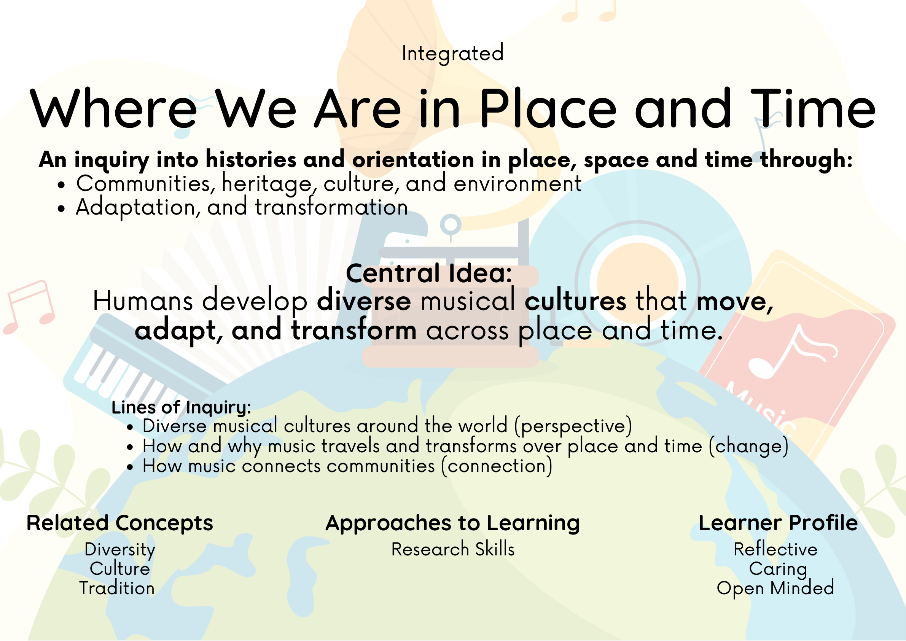

IB Programme Standards
Teaching Standards & My Practice
Reflections aligned to the IB Programme Standards and Practices, evidenced through artefacts from my music classroom across the PYP.
IB Teaching and Learning Standards
Evidence aligned to the IB Approaches to Teaching (0403-01 – 0403-05).
- Clear Goals and Connections: Every lesson includes an explicit learning goal connected to the Unit of Inquiry, learner profile attributes, or approaches to learning, giving students a clear anchor for why and what they are learning.
- Discussion & Reflection: After games, songs, and musical activities, structured reflection opportunities invite students to discuss and draw their own conclusions rather than receiving them from the teacher.
- Wonder Wall: A class Wonder Wall gives students an ongoing space to document wonderings and questions as they arise throughout a unit.
- Feedback Surveys: Feedback surveys conducted at the beginning, middle, and end of the year ensure student perspectives actively shape classroom activities and future units.
- Thinking Routines: Project Zero thinking routines are used at the start and end of units to surface prior knowledge, promote inquiry, and document conceptual growth over time.
- Exploratory & Play-Based Learning: Students engage in hands-on, exploratory learning environments through instruments, physical props, and technology tools such as Osmo Coding Jam, Dash & Xylo robots, Chrome Music Lab, and GarageBand.
- Personal Interests & Self-Directed Inquiry: Students have many opportunities to make choices about what they are learning and how, such as with a digital music choice board, self-directed rehearsals, and repertoire selection.
- Practical & Theoretical: Musical activities are designed to develop conceptual vocabulary — dynamics, timbre, form, pitch, rhythm, tension, focus — alongside practical skills, so that students understand not just what they are doing but why it works.
- Learner Profile Attributes: LPAs are explicitly tagged in lesson presentations and learning materials, and included in assessments and reflections for older students, supporting metacognitive skill development.
- Alternative Modes of Response: Students can respond using recordings, drawing, and other modes, allowing them to demonstrate conceptual understanding without relying solely on written English.
- Transdisciplinary Links: Conceptual links between music and other disciplines — coding, storytelling, identity, advocacy, growth mindset — are made explicit so students can transfer their understanding across subjects.
- Student-Led Concept Exploration: Students develop conceptual understandings of composition and the elements of music through open-ended composition tools such as GarageBand, Chrome Music Lab, and Danielx.net.
- Musical Connections: Units and learning experiences are designed to connect musical concepts to broader contexts – for example, analyzing songs as tools for advocacy and social change, or exploring how body percussion and instrument-making connect to the natural environment.
- Voice & Choice: Students are given voice and choice to select performance options – songwriting, dance, theatre, composition – that express ideas they care about, with the expectation that their work communicates a message to an authentic audience.
- Relevant Examples: Music, videos, and stories from diverse cultures support the exploration of local and global contexts, and support integration with homeroom units.
- Self-Reflection Activities: Students reflect to consider how musical skills and dispositions – growth mindset, collaboration, self-management – apply in other areas of their lives and learning beyond the music room.
- Student Inquiry: Research into musical genres, history, and culture supports self-directed inquiry into how music functions in different communities and contexts around the world.
- Student Groups: Students are grouped intentionally based on musical strengths, ATL skills, and survey data, to maximize learning opportunities and ensure student well-being within collaborative tasks.
- Roles & Responsibilities: Learning experiences across all grade levels include regular opportunities for students to negotiate roles, give peer feedback, and take shared responsibility for a collective outcome — in cover band performances, multi-part musical arrangements, tableau activities, and drama games.
- Co-construction with Students: Essential agreements, class keys, and a calm corner give students shared ownership of the classroom environment and its norms.
- Drama Activities: Theatrical learning experiences build community as students work together to tell stories, take risks in improv games, and actively celebrate each other's successes.
- Positive Classroom Management: Our "Class Keys" classroom reward system ties classroom agreements to shout-out circles to help students recognize and name the positive choices and behaviors of their peers.
- Executive Function: Visual cues, color-coding, consistent class signage, timers, and chunked instructions that are both written and verbal help all learners navigate transitions and multi-step tasks. Asynchronous audio recordings of instructions are also made available on Seesaw.
- Language Support: Key vocabulary is translated into student home languages when introduced, and classroom signage is available for ongoing reference. Students volunteer to share translations for the class, celebrating linguistic identity through translanguaging.
- Classroom Routines: A highly organized classroom with consistent welcoming routines and expectations reduces cognitive load and ensures all students can access learning from the moment they arrive.
- Scaffolded Challenges: Musical repertoire is sequenced and ranked by difficulty, allowing students to work at an appropriate level of challenge without lowering expectations.
- Student Preferences: Survey tools and student choice activities support both differentiation and agency, allowing students to indicate preferences and direct aspects of their own learning experience.
- Prior Knowledge: Informal assessments at the start of each unit – using tools such as Kahoot, WayGround, or Project Zero thinking routines – surface student prior knowledge and directly inform unit planning and pacing. End-of-unit assessments are compared against these baselines to show students their personal growth and to inform future iterations of the unit.
- Technology: Multiple technologies are used to extend and support learning across all grade levels: Seesaw for individual feedback, portfolio documentation, and asynchronous instruction; Wayground, Mentimeter, and Microsoft Forms for data gathering and prior knowledge checks; GarageBand, Chrome Music Lab, and Danielx.net for student composition; Osmo Coding Jam and Dash & Xylo robots for transdisciplinary concept reinforcement; and the digital music choice board for self-directed extension and enrichment.
Featured Units
Grade 3



Grade 4


Grade 5